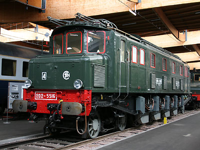
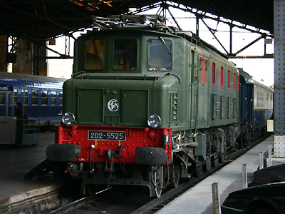

2D2 5500
Machines de vitesse mises en service par la compagnie du Paris-Orléans sous les numéros E 500.
Machines remarquables de la série
5516 : Machine préservée à la Cité du train à Mulhouse.
5525 : Locomotive conservée par la FACS.
Pour plus d'info :
la fiche 2D2 5500 sur Wikipedia
l'inventaire des 2D2 5500 sur Trains
du Sud-Ouest

La 2D2 5516 exposée à la Cité du train à Mulhouse (10/05/2006)

La 2D2 5525 à Austerlitz avec le Pullmann Orient Express pour les journées du patrimoine (17/09/2005)